論理学は、思考の法則とか形式について研究する学問である。人間は、心身の二重体であり、心と身体は一定の形式や法則に支配されながら生きている。身体は生理作用によって健康を維持しているが、生理作用は一定の形式や法則の支配のもとで持続している。例えば、血液は全身を循環しながら養分と酸素を末端の細胞や組織に供給している。それは、血液が「循環の形式」を通じて養分と酸素を全身に供給することを意味している。
人体の知覚や運動は、求心神経や遠心神経を通じて神経の信号が伝達されることによってなされる。これは知覚や運動が、神経における「信号伝達」の形式によってなされることを意味する。また人体の血液では、常に酸素の触媒作用によって化学反応が起きているが、この反応は一定の法則のもとに行われる。また血管内の血液の流れは、流体の法則のもとに行われる。このように人体の生理作用は、すべて一定の形式と法則のもとに行われている。それと同様に、心の思考方式も一定の形式や法則のもとに行われる。人間の思考だけは、法則や形式にとらわれることなく、思いのままにできると考えやすいが、そうではない。
アリストテレス（形式論理学の創始者）以後、形式論理学は、様々な思考がもっているところの、共通な法則や形式だけを扱ってきたが、それに対してヘーゲルやマルクスの論理学（弁証法）は、思考だけでなく自然の発展過程における法則と形式を扱ってきた。本章において、まず従来の論理学、中でも特に形式論理学とヘーゲル論理学の要点を紹介する。続いて、統一原理に基づいた統一論理学を紹介したのちに、統一論理学の立場から従来の論理学を検討する。
本項目において、主として形式論理学、ヘーゲル論理学、マルクス主義論理学、記号論理学、先験的論理学を扱う。そのうち形式論理学は統一論理学と関連が深いために比較的十分な説明を加えるが、その他は簡単に要点のみを紹介する。その理由は、認識論の場合と同様に、ただ従来の論理学が抱えている問題点も統一論理学が解決しうるということを示すために、その問題点に関する部分だけを紹介するからである。
ところでその中で、ヘーゲル論理学を比較的に詳しく扱ったように見えるのは、統一論理学から見ると、ヘーゲル論理学全体に問題が多いために、その問題の要点を扱ったところ、長くなっただけである。したがって、統一論理学それ自体を理解するには、本項目は省略してもよいのである。
形式論理学は、アリストテレスによって立てられた論理学として、純粋な思考（判断や推理）の形式や法則のみを研究する学問であり、判断や推理の対象（内容）は一切取り扱っていない。カントは、「ところで論理学が、かかる確実な道をずっと古い時代から歩んできたことは、この学がアリストテレス以来、いささかも後退する必要がなかったところから見ても明白である。……更に論理学について奇異なことは、この学が今日に至るまでいささかも進歩を遂げ得ず、従って打ち見たところそれ自体としてはすでに自己完了している観があるという事実である(1)」（『純粋理性批判』第二版序文）といっている。形式論理学はアリストテレス以来、約二千年間、ほとんど変更なく継続してきたものである。それは、この論理学が思考に関する限り、それなりの客観的な真理を含んでいるからである。統一論理学を紹介するにあたって、まず形式論理学を紹介するのは、この論理学のどの部分が真理であるかを明らかにすると同時に、不十分な点も指摘するためである。以下、形式論理学の要点を紹介する。
形式論理学は思考の法則として、次の四つの原理を挙げている。
① 同一律（law of identity ）
② 矛盾律（law of contradiction）
③ 排中律（law of excluded middle）
④ 充足理由律（law of sufficient reason）
同一律は、「ＡはＡである」という形式で表される。例えば「花は花である」というのがそれである。これは現象の変化にもかかわらず、花であるという事実それ自体は不変であるということを意味している。また思考そのものの一致性をも意味する。すなわち「花」という概念は、いかなる場合にも、同一の意味を有しているということである。さらに「鳥は動物である」というように、二つの概念（鳥と動物）が一致していることをも意味する場合もある。
矛盾律は「Ａは非Ａではない」という形式で表されるが、これは同一律を裏返したものである。「これは非花ではない」というのは「これは花である」というのと同じ意味であり、「鳥は非動物ではない」というのも「鳥は動物である」というのと同じである。一方は肯定的な表現であり、他方は否定的な表現であるが、内容は同じである。
排中律は、「ＡはＢか非Ｂのいずれかである」と表される。その意味は、Ｂと非Ｂという二つの矛盾する主張の間に、第三の主張はありえないということである。
充足理由律は、ライプニッツによって初めて説かれたものであるが、「すべての思考は必ずしかるべき理由があって存在する」ということである。これを一般的にいえば、「すべて存在するものはその存在の十分な理由を有する」という因果律になる。ところで、この理由には二つの意味がある。一つは根拠（論拠）を意味し、もう一つは原因を意味する。根拠は帰結に対する相対的な概念であり、原因は結果に対する相対的概念である。したがってこの法則は、思考には必ずその論拠があり、存在には必ずその原因があるということを意味するのである。
そのほかいろいろな法則（原理）があるが、それらはみな、この四つの根本原理から演繹されてくるものである。形式論理学は、また三つの根本的な要素（思想の三要素）――概念（concept ）、判断（judgment ）、推理（inference ）――から成り立っている。次にそのことについて説明する。
概念とは、事物の本質的な特徴をとらえた一般的な表象（または考え）をいうが、概念には「内包」（intension ）と「外延」（extension ）という二つの側面がある。内包は各概念に共通な性質をいい、外延はその概念が適用される対象の範囲をいう。それについて、生物の例を取って説明してみよう。
生物は、動物、脊椎動物、哺乳類、霊長類、人類というように、いろいろな段階の概念に分類される。生物は生命のあるものである。動物にはもちろん生命があるが、その上に感覚器官がある。脊椎動物には、それに加えて脊椎がある。哺乳類には、それに加えて哺乳をするという性質がある。霊長類は、それに加えて物を握る能力をもっている。人類は、さらに理性がある。そのように、それぞれの概念を代表する各段階の生物は共通な性質をもっているが、ある概念のそのような共通な性質のことを、その概念の内包というのである。
生物には動物と植物があり、動物には軟体動物、節足動物、脊椎動物などがあり、脊椎動物には爬虫類、鳥類、哺乳類などがあり、哺乳類には霊長類とか食肉類などがあり、霊長類にはいろいろなサルと人類がいる。以上、ある概念が適用される対象の範囲について述べた。そのような範囲をその概念の外延と呼ぶが、それを図で表せば、図10―１のようになる。
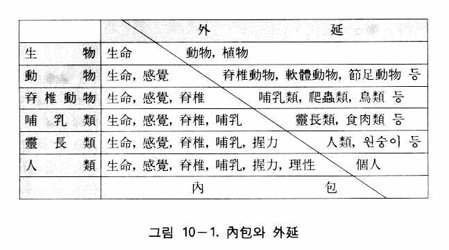
ある二つの概念を比較するとき、外延がより狭く、内包がより広い概念を「種概念」（下位概念）といい、外延がより広く、内包がより狭いものを「類概念」（上位概念）という。たとえば脊椎動物と爬虫類、鳥類、哺乳類などの概念を比べれば、前者は類概念であり、後者は種概念である。また動物という概念と軟体動物、節足動物、脊椎動物などの概念を比べれば、前者が類概念で後者が種概念となる。さらに生物という概念と動物や植物の概念を比べれば、前者が類概念、後者が種概念となる。このような操作を何度も繰り返していくと、それ以上さかのぼれない最高の類概念に至るが、それを範疇（カテゴリー、Kategorie）という（図10―２）。
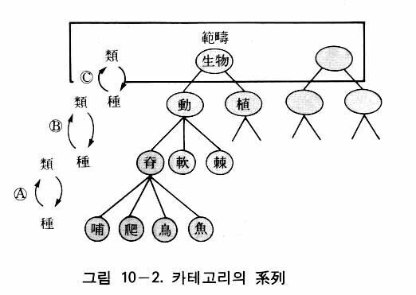
また先天的に理性に備わっている、経験によらない純粋概念も、やはり範疇と呼ばれている。範疇は学者によって異なっている。なぜかというと、それぞれの学者の思想体系において、最も重要な基本的な概念のことを範疇と呼んでいる場合が多いからである。
初めて範疇を定めたのはアリストテレスであるが、彼は文法を手がかりとして、次のような十個の範疇を立てた。
① 実体（substance ）
② 量 （quantity）
③ 質 （quality ）
④ 関係（relation）
⑤ 場所（place ）
⑥ 時間（time）
⑦ 位置（position）
⑧ 状態（condition ）
⑨ 能動（action）
⑩ 被動（passivity ）
近世に至り、カントは十二個（四綱十二目）の範疇を立てたが、それらはカントの十二の判断形式（後述）から導き出したものであった。カントの範疇については、すでに認識論において紹介したとおりである。
判断とは何か
判断（judgment）とは、ある対象について、あることを主張することであるが、それは二つの概念の一致あるいは不一致の区別を断定することをいう。それを言語で表現したものが命題（proposition ）である。
判断は「主語概念」（主辞、主語、subject ）、「述語概念」（賓辞、述語、predicate ）、および「繋辞」（連結辞、copula）の三要素から成っている。思考の対象となっている事物が主語概念であり、その内容を規定するのが述語概念であり、これら二つの概念を連結するのが繋辞である。一般的に、主語概念をＳ、述語概念をＰ、繋辞を―で表して、判断はＳ―Ｐと定式化される。
判断の種類
判断の種類としては、カントの十二の判断形式（四綱十二形式）があるが、それが今日の形式論理学において、そのまま用いられている。カントの十二の判断形式とは、分量、性質、関係、様相の四綱のおのおのに三つの判断形式を与えたもので、次のようである。
全称判断（allgemeine Urteil ）…すべてのＳはＰである。
分量（Quantität ） 特称判断（besondere Urteil）……若干のＳはＰである。
単称判断（einzelne Urteil ）……このＳはＰである。
肯定判断（bejahende Urteil）……ＳはＰである。
性質（Qualität ） 否定判断（verneinde Urteil）……ＳはＰでない。
無限判断（unendliche Urteil ）…Ｓは非Ｐである。
定言判断（kategorische Urteil ）…ＳはＰである。
関係（Relation ） 仮言判断（hypothetische Urteil）…ＡがＢならばＣはＤである。
選言判断（disjunktive Urteil）……ＡはＢであるかＣである。
蓋然判断（problematische Urteil ）……ＳはＰであろう。
様相（Modalität ） 実然判断（assertorische Urteil）……ＳはＰである。
必然判断（apodiktische Urteil ）…ＳはＰでなければならない。
上記のように、カントは四個の分量、性質、関係、様相の綱目において、それぞれ三個の判断形式を立てたのである。われわれは日常生活において、様々な事件や状況に直面する。そしてそれらに対処するためにいろいろな方案を考える。そうした思考の内容は、人によって千差万別であるのはいうまでもない。しかし、判断に関する限り、上述の四つの綱目の判断形式に従ってなされているのである。すなわち分量（多いか、少ないか）に関する判断と、性質（…であるか、否か）に関する判断と、概念の相互関係に関する判断と、それから様相（確実性はどうであるか）に関する判断である。
基本的形式
以上の判断形式のうち最も基本となるものが定言判断であるが、それに全称と特称の、量に関する判断形式と、肯定と否定の、質に関する判断形式を組み合わせれば、次の四種の判断が得られる。
全称肯定判断……すべてのＳはＰである（Ａ）
全称否定判断……すべてのＳはＰでない（Ｅ）
特称肯定判断……あるＳはＰである（Ｉ）
特称否定判断……あるＳはＰでない（Ｏ）
ところで上記の十二の判断形式の中の選言判断と仮言判断を除けば、残りはすべて定言判断に直すことができる。そこでこの定言判断を質と量の立場から分類すれば、仮言判断、選言判断以外の形式はすべて以上の四つの形式（ＡＥＩＯ）に収斂されるようになる。それでこの四つのＡＥＩＯの形式を「判断の基本的形式」という。Ａ、Ｅ、Ｉ、Ｏの記号は、ラテン語の affirmo（肯定）とnego（否定）のそれぞれの初めの二つの母音からとったものである。
周延と不周延
定言判断において、その判断が誤謬に陥らないためには、主語と述語の外延の関係が検討されなくてはならない。ある判断において、概念が対象の全範囲にわたって適用される場合もあれば、一部分に限って適用される場合もある。概念の適用範囲が外延全体に及ぶ場合、その概念は「周延」または「周延されている」という。そして概念の適用範囲が外延の一部だけに及ぶ場合、その概念は「不周延」または「周延されていない」という。
この周延・不周延は判断において、主概念と賓概念の関係を知るのに重要である。判断にはＳ（主概念）とＰ（賓概念）が共に周延してもよい場合があるが、ＳとＰが共に周延してはならない場合もあり、またＳとＰのうちの一方だけが周延すべき場合もあるからである。
例えば「すべての人間（Ｓ）は動物（Ｐ）である」において、Ｓは周延、Ｐは不周延である。これは「全称肯定判断」（Ａ）の主賓関係である（図10―３）。
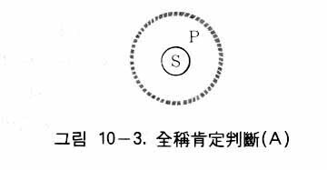
「すべての鳥（Ｓ）は哺乳動物（Ｐ）ではない」という判断においては、主概念と賓概念が共に周延されている。これは、「全称否定判断」（Ｅ）の主賓関係である（図10―４）。
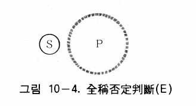
「ある花（Ｓ）は赤い花（Ｐ）である」において、Ｓは不周延、Ｐも不周延である。これは、特称肯定判断（Ｉ）の主賓関係である（図10―５）。
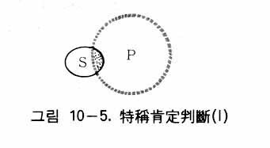
「ある鳥（Ｓ）は肉食動物（Ｐ）ではない」という判断において、Ｓの一部（主概念の外延の一部）がＰ（賓概念）の範囲外にあることを表している。つまりＳは不周延であり、Ｐは周延している。これは、特称否定判断（Ｏ）の主賓関係である（図10―６）。
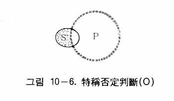
以上のＡＥＩＯの判断において、主概念と賓概念の周延・不周延の関係はそのまま規則となっており、この規則を離れたらその判断は誤謬に陥る。例えば「すべての仁者は好山家である」という判断から「すべての好山家は仁者である」という判断を導き出したとしたら、不当周延の虚偽に陥るために、その判断は誤りである。全称肯定判断においてＳは周延、Ｐは不周延であるにもかかわらず、結論の判断ではＳもＰも周延されているからである。
推理（inference）とは、既知の判断を根拠にして新しい判断を導く思考をいう。つまり既知の判断を理由にして、「ゆえに……である」という「結論」（conclusion）を導き出すことを推理という。そのとき、すでに知られている判断を「前提」（premise ）という。推理において、前提となる判断が一つだけある場合と、二つ以上ある場合があるが、前者を「直接推理」（direct inference）、後者を「間接推理」（indirect inference）という。間接推理には三段論法、帰納推理、類比推理などがある。ここでは間接推理のそれぞれについて簡単に紹介する。
演繹推理（演繹法）
間接推理は、二つ以上の前提から結論を導くものである。また普遍的、一般的原理をもつ前提から特殊な内容の結論を導く推理を演繹推理（演繹法）という。演繹推理の代表的なものが、二つの前提から結論を導き出す間接推理としての三段論法である。
三段論法（定言的三段論法）において二つの前提があるが、初めの前提を大前提といい、次の前提を小前提という。そして大前提には大概念（Ｐ）と中概念（Ｍ）が、小前提には小概念（Ｓ）と中概念（Ｍ）が含まれるのであり、結論には小概念（Ｓ）と大概念（Ｐ）が含まれるようになる。ここで中概念（Ｍ）を媒概念ともいう。例えば次のようになる。
大前提：すべての人間（Ｍ）は死すべきものである（Ｐ）。
小前提：すべての英雄（Ｓ）は人間（Ｍ）である。
結 論：ゆえに、すべての英雄（Ｓ）は死すべきものである（Ｐ）。
これを符号だけで表示すれば次のようになる。
ＭはＰである
ＳはＭである
ゆえに、ＳはＰである
この三段論法において大概念（Ｐ）の外延が最も大きく、中概念（Ｍ）がその次に大きく、小概念（Ｓ）の外延が最も狭い。これを図で表示すれば、図10―７のようになる。
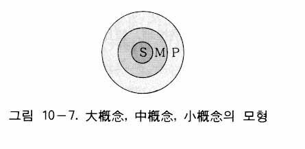
帰納推理（帰納法）
間接推理において、二つ以上の前提が特殊な事実を包含する場合、その特殊な内容からより普遍的な真理を結論として導こうとする推理方法を「帰納推理」（inductive inference）または帰納法という。例を挙げれば、次のようになる。
馬、犬、鶏、牛は死ぬものである。
馬、犬、鶏、牛は動物である。
ゆえに、すべての動物は死ぬものである。
ところでこの帰納推理の結論（「ゆえにすべての動物は死ぬ」）は、判断形式から見ると正しいものであろうか。この結論は「全称肯定判断」である。したがって、動物の概念は周延しなければならない。ところがこの帰納法では不周延である。馬、犬、鶏、牛だけでは動物の一部だからである。図10―３のように全称肯定判断でなければならないにもかかわらず、図10―５のように特称肯定判断からなっている。
つまり判断形式から見れば、この間接推理は誤っている。しかし、自然界には少数の観察から全体の性質を認識可能ならしめる「斉一性の原理」が働いている。また、自然界に働いている「因果律」が、同一原因から同一結果の想定を可能ならしめている。したがって、帰納推理は大体において正当であることが体験によって証明されているのである。
類比推理（類推）
推理において、また一つ重要なのが類比推理である。今ここに、ＡとＢという二つの観察の対象があるとしよう。そして観察によって、ＡとＢが共に共通な性質、例えばａ、ｂ、ｃ、ｄの性質をもつことが分かっており、Ａには、Ｂにない、もう一つの性質ｅがあることが分かったとしよう。そしてＢはそれ以上詳しく観察しにくい条件下にあるとする。そのとき観察者は、Ａ、Ｂがａ、ｂ、ｃ、ｄの性質を共通にもっているという事実を根拠として、Ａがもっているｅの性質を、Ｂももっているであろうと推理できる。このような推理を「類比推理」または簡単に「類推」という。
例を挙げれば、地球と火星を比較して火星にも地球と同じような生物がいるだろうと推理することがそれである。例えば、両者が次のような共通な性質をもっているとする。
ａ．両者共に惑星であり、自転しながら太陽の周りを公転している。
ｂ．大気をもっている。
ｃ．ほとんど同じような気温をもっている。
ｄ．四季の変化があり、水もある。
そうすると、これらの事実を根拠として、地球には生物がいるから火星にも生物がいるであろうと推理することができる。これが、すなわち類推である。
ところでこの類推は、われわれの日常生活において、しばしば使われる推理である。今日の発達した科学的知識も、初期には、この類推によって得られたものが多かった。そればかりでなく、日常の家庭生活、団体生活、学校生活、企業生活、創作活動などにおいて、類推は重要な役割を果たしている。したがって、ここに類推の正確性が必要になってくる。その正確性の必要条件は、次のようである。
① 比較される事物に類似点がなるべく多くあること。
② その類似点は偶然的ではなく、本質的であること。
③ 両者の類似点に対して両立しえない性質があってはならない。
以上で、類推に関する説明を終える。形式論理学には、このほかにも、直接推理、仮言的三段論法、選言的三段論法、誤謬論など扱うべき項目がまだあるが、ここでは、ただ形式論理学の要点だけを紹介するのが目的であるから、この程度で終えることにする。
ヘーゲル論理学の特徴
ヘーゲル論理学の特徴は、「思考の法則と形式」に関する理論ではなく「思考の発展の法則と形式」に関する理論であるという点にある。しかもその思考は、人間の思考ではなく、神の思考である。したがってヘーゲル論理学は、「神の思考がいかなる法則や形式によって発展したのか」を研究する学問である。
この神の思考は、神自体に関する思考から、一定の法則に従って自然に関する思考に発展し、ついで歴史に関する思考、国家に関する思考に発展し、ついに芸術、宗教、哲学に関する思考にまで発展する。このような思考の発展に関する法則と形式が、まさにヘーゲル論理学の特徴であ
る。
ヘーゲル自ら述べているように、ヘーゲル論理学は世界創造以前の神の思考の展開を取り扱っており、「天上の論理」すなわち「創造以前の永遠な本質の中にある叙述」である(2)。しかし、それは形式論理学のように、単に形式的な思考の法則を取り扱うのではない。神の思考の展開であるとしながらも、現実的なものの最も普遍的な諸規定、諸法則を取り扱おうとするものである。
ヘーゲル論理学の骨格
ヘーゲル論理学は「有論」、「本質論」、「概念論」の三部門から成っており、この三部門はまたおのおの細分化されている。すなわち「有論」は「質」、「量」、「質量」から成り、「本質論」は「本質」、「現象」、「現実性」から成り、「概念論」は「主観的概念」、「客観的概念」、「理念」から成っている。そして、これらはまたおのおの細分化されている。例えば「有論」の「質」は「有」、「定有」、「向自有」から成り、さらに「有」は「有」、「無」、「成」から成っているのである。
ヘーゲル論理学において論理展開の出発点となっているのが、有―無―成の弁証法である。この三段階を通過して「有」が「定有」に移行する。そして「定有」にまた三段階があって、それを通過すれば「定有」は「向自有」に移行する。「向自有」にまた三段階があって、これを通過すると「質」が「量」へ移る。「量」が三段階を通過して「質量」移り、「質量」が再び三段階を通過すれば、「有」に関する理論が終わる。
次は、「本質」に関する理論であるが、「本質」から「現象」へ、「現象」から「現実性」へと移行する。次は、「概念」に関する理論となる。概念は、「主観的概念」から「客観的概念」へ、「客観的概念」から「理念」へと移行する。「理念」の中では、「生命」、「認識」、「絶対理念」という三つの段階がある。そのようにして、「絶対理念」が論理の発展における最後の到達点となっている。
次に、論理の世界すなわち理念の世界は、真に自己を実現するために、かえって自己を否定して自然の領域に移行する。ヘーゲルはこれを「理念自身の他なるものへ移りゆく」といい、自然は「理念の自己疎外、自己否定（Selbstentfremdung, Selbstverneinung derldee）、または他在の形式（die Form des Andersseins）における理念であるという。自然界においては、「力学」、「物理学」、「生物学」の三段階を通過する。
このように、自己を否定して自ら外に現れ自然界となった理念は、その否定をさらに否定して本来の自己に戻るという。人間を通じて自己を回復した理念が精神である。精神は「主観的精神」、「客観的精神」、「絶対精神」の三段階を通過するが、ここに「絶対精神」が精神の発展の最後の段階である。そこにおいて「絶対精神」は「芸術」、「宗教」、「哲学」の三段階を通過してついに本来の自己（絶対理念）を復帰するのである。ヘーゲルの体系を図示すれば、図10―８のようになる。
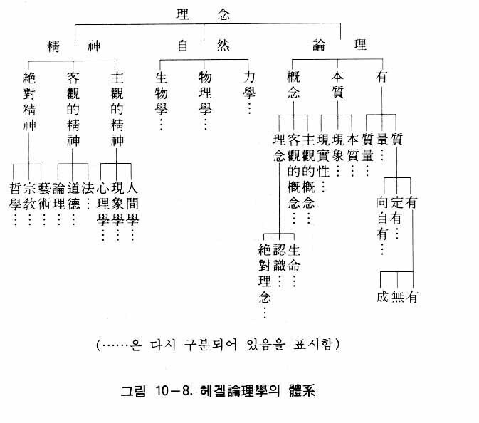
有―無―成の弁証法
ヘーゲル論理学においては、有から出発して絶対理念に至るまでを扱っているが、有は有論において扱われており、有―無―成の弁証法から始まっている。したがってヘーゲル論理学の性格を理解するためには、有―無―成の弁証法について調べてみる必要がある。この部分がヘーゲル論理学（弁証法）の出発点であると同時に核心となっているからである。
ヘーゲルの論理学は、有から始まる(3)。有とは、単に「ある」ということであるが、それは最も抽象的な概念であり、全く無規定性な空虚な思考である。ゆえにそれは否定的なもの、すなわち「無」であるという。ヘーゲルにおいては、有と無は共に空虚な概念であり、両者にはほとんど区別がない(4)。
次にヘーゲルは、有と無の統一が成であるという。そこにおいて、有も無も、共に空虚で抽象的であるが、両者は対立の状態において統一をなしたのちに、最初の具体的な思考としての成となる(5)。この有―無―成の論理を基本として、普通ヘーゲルの方法と考えられている、正―反―合、肯定―否定―否定の否定、定立―反定立―総合の弁証法的論理が成立しているのである。
定有への移行
次は、「定有」について述べる。定有とは、一定の形態をもつ有、具体的に考察された有であり、有が単に「ある」を意味しているのに対して、定有は「何ものかである」ことを意味している。有―無―成から定有への移行は、要するに抽象的なものから具体的なものへの移行を意味しているのである。成はそのうちに有と無の矛盾を含んでいるが、この矛盾によって、成は自己を止揚して、つまり一層高められて、定有となるのである。
このように定有とは、特定の有、規定された有である。ヘーゲルはこの定有の規定性のことを「質」と呼んだ。しかしいくら特定されるといっても、ここで考察されているのは、単純な規定性のことであり、規定性一般にすぎない。
有を定有とする規定性は、一方では「或るものである」という肯定的な内容であると同時に、他方では限られたもの、すなわち制限を意味している。したがって、或るものを或るものとする質は、「或るものである」という肯定面から見れば、実在性であり、限られたもの、他のものでないという面から見れば、否定性である。したがって定有においては、実在性と否定性の統一、肯定と否定の統一がなされている。次に、定有は向自有へと移行する。向自有とは、他のものと連関せず、また他のものへ変化せず、どこまでも自分自身にとどまっている有のことである。
有―本質―概念
ヘーゲルが「有論」において論じたのは、「あるということ」はどういうことかということから始まって、変化の論理、生成消滅の論理に関することであった。次に「有論」は「本質論」へと移るが、そこでは、事物のうちにある不変なもの（本質）、および事物の相互関連性が論じられている。次に「有論」と「本質論」の統一としての「概念論」へと移る。そこでは、他者に変化しながら自己であることをやめない事物のあり方、すなわち自己発展が考察されている。この発展の原動力をなすものが、概念であり、生命である。
なぜ神の思考が有―本質―概念というように進んだといえるのであろうか。それは、事物を外側から内側へと関心を移していく人間の認識の過程を見れば分かるという。例えば、ある花を認識する場合、まず外的に現象的に花の存在をとらえたのちに花の内的な本質を理解する。そして、花の存在と花の本質が一つになった花の概念を得るようになるというのである。
論理―自然―精神
すでに述べたように、ヘーゲルによれば、自然とは他在の形式における理念、自己疎外した理念である。したがって論理学を「正」とすれば、自然哲学は「反」となる。次に、理念は人間を通じて再び意識と自由を回復するが、それがすなわち精神である。したがって、精神哲学は「合」となる。
自然界も、正―反―合の弁証法的発展をしているが、それが力学、物理学、生物学の三段階である。しかし、それは自然界そのものが発展する過程ではなくて、自然界の背後にある理念が現れていく過程である。まず力の概念が、次に物理的現象の概念が、その次に生物の概念が現れるというのである。
そしてついに人間が現れ、人間を通じて精神が発展する。それがすなわち主観的精神、客観的精神、絶対精神の三段階の発展である。主観的精神とは、人間個人の精神のことであるが、客観的精神とは個体を越えて社会化された精神、対象化された精神をいう。
客観的精神には、法、道徳、倫理の三段階がある。法とは、国家における憲法のように整備されたものではなく、集団としての人間関係における初歩的な形式をいう。次に、人間は他人の権利を尊重して、道徳的生活をするようになる。しかしそこには、まだ多分に主観的な面（個人的な面）がある。そこで、すべての人が共通に守るべき規範として倫理が現れる。
倫理の第一の段階は、家庭である。家庭では愛によって家族が互いに結ばれており、自由が生かされている。第二の段階は、市民社会である。ところが市民社会に至ると、個人の利害が互いに対立し、自由は拘束されるようになる。そこで第三の段階として、家庭と市民社会を総合する国家が現れるようになる。ヘーゲルは、国家を通じて理念が完全に自己を実現すると考えた。理念の実現した国家が理性国家である。そこでは、人間の自由が完全に実現される。
最後に現れるのが絶対精神であるが、絶対精神は芸術、宗教、哲学の三段階を通じて自らを展開する。そして哲学に至って理念は完全に自己を回復する。このようにして理念は、弁証法的運動を通じて原点に帰る。すなわち自然、人間、国家、芸術、宗教、哲学などの段階を通過して、ついに最初の完全なる絶対理念（神）に帰る。この帰還がなされることによって発展の全過程が終わる（図10―９(6)）。
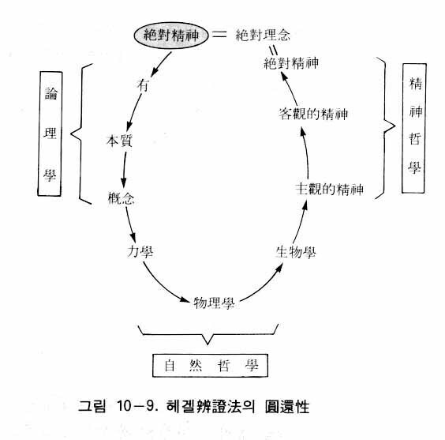
ヘーゲル論理学のトリアーデ構造
すでに説明したように、ヘーゲル弁証法の始まりは有―無―成というトリアーデ（三段階過程）であり、この三段階は矛盾による正―反―合の三段階である。このようなトリアーデがレベルを高めながら反復することによって、論理学―自然哲学―精神哲学という最高のトリアーデを形成するのである。
論理学を構成する三段階過程は有―本質―概念であるが、この概念の段階において絶対精神（神の思考）は理念つまり絶対理念となる。ところで絶対精神は、論理学の段階を通過して、絶対理念となって外部に現れたのち、自然界となり（自然哲学）、さらに人間を通じて主観的精神―客観的精神―絶対的精神となる。そして一番最後には、最初に出発した自己自身、すなわち絶対理念に戻る。
自然哲学や精神哲学は、論理学とは全く別の分野のように考えがちであるが、そうではない。論理学は、三段階過程の初めの段階であるが、その中に自然哲学や精神哲学の原型がすべて含まれているのである。
すでに述べたように、絶対精神は有―本質―概念というトリアーデの概念の段階において理念となるのであるが、この理念は自然哲学と精神哲学の内容のすべての原型となっている。それはいわば、宇宙の設計図をもっている精神である。つまり自然哲学や精神哲学は、この理念の中の原型がそのまま外部に現れた映像にすぎないのである。あたかも映画のフィルムの画像が、スクーリーンに映ったものが映画であるのと同じである。言い換えればヘーゲルの論理学は最高のトリアーデの初期段階であり、自然哲学や精神哲学の原型であって、それらをすべて包含しているのである。それゆえ、論理学においてヘーゲルの哲学体系全体を扱っているのである。絶対精神の発展を扱う、このようなヘーゲルの弁証法は普通、観念弁証法と呼ばれている。
ヘーゲル弁証法の円環性と法則と形式
すでに述べたように、ヘーゲル弁証法は、正―反―合の三段階の発展の反復を通じて高い水準において元の位置に戻ってくる復帰性の運動であり、円環性の運動である。これは低いレベルのトリアーデにおいても、高いレベルのトリアーデにおいても、同じなのである。ところでヘーゲル弁証法のもう一つの特徴は、発展運動が円環性（復帰性）であると同時に完結性であるということである。絶対精神が自己内復帰を終えれば、それ以上の発展はなくなるからである。
ここで、ヘーゲル論理学における法則と形式について述べる。形式論理学における法則は、同一律、矛盾律などであった。そして形式は、判断形式や推理形式であった。ところでヘーゲル論理学の法則は、弁証法の内容である「矛盾の法則」、「量から質への転化の法則」、「否定の否定の法則」などであり、形式は、弁証法の発展形式である正―反―合の三段階過程による発展形式を意味する。このような三段階発展の形式を扱う論理学は普通、弁証法的論理学と呼ばれている。
ヘーゲルによれば、概念が物質の衣を着て現れたのが自然であるから、観念（概念）は客観的存在である。ところがマルクスは逆に、物質こそ客観的な存在であって、観念（概念）は物質世界が人間の意識に反映したものにすぎないと主張した。しかしマルクスは、ヘーゲルの正反合の弁証法をそのまま受け入れて、それを物質の発展形式とした。したがってヘーゲルの観念弁証法に対して、マルクスの場合は唯物弁証法というのである。
この唯物弁証法に基づいてマルクス主義の論理学が立てられた。ところで唯物弁証法も弁証法、すなわち正反合の三段階過程を内容としている点においては観念弁証法と同一であるために、マルクス主義論理学もやはり弁証法的論理学である。その特徴は本来、形式論理学、特に同一律・矛盾律に反対するということである(7)。すなわち、事物が発展するためには「ＡはＡであると同時にＡは非Ａである」でなくてはならず、思考の法則はその反映であると考えたからである。そして唯物史観の立場から、思考の形式と法則を扱う形式論理学は上部構造に属し、階級性をもつ論理学であるとして、これを拒否し、唯物弁証法による弁証法的論理学を立てたのである(8)。
ところが形式論理学を拒否することによって、必然的に次のような困難にぶつかるようになった。すなわち、形式論理学におけるような前後に矛盾のない、終始一貫した正確な思考をすることができなくなってしまうという困難に陥らざるをえなかった。
言語学も同様な困難に陥っていた。言語も上部構造に属し、階級性をもつという主張とともに、共産主義体制下において、それまで常用していたロシア語に代わる新しいソビエト言語を使用する必要性が論じられるようになった(9)。
そこで一九五〇年にスターリンが「マルクス主義と言語学の諸問題」という論文を発表し、「言語は上部構造ではなく、階級的なものでもない」と言明した。言語学におけるこの問題は論理学における問題でもあったため、この論文を契機として、一九五〇年から五一年にかけて、ソ連で形式論理学の評価をめぐって大々的な討論が行われた。その討論によって、形式論理学の思考の形式と法則は上部構造ではなく、階級性をもたないという結論が下された。そして形式論理学と弁証法的論理学との関係に対しては、「形式論理学は、思惟の初等的法則と形式にかんする学であるが、弁証法的論理学は、客観的実在とその反映たる思惟との発展法則にかんする高等論理学である(10)」と規定されたのであった。
ところで、唯物弁証法に基づいた論理学すなわち弁証法論理学は、上述のように形式論理学の同一律、矛盾律などを批判しただけで、論理学として体系化された内容は誰によっても提示されていないのである(11)。
記号論理学は、形式論理学を発展させたものであり、数学的記号を用いて、正しい判断の仕方を正確に研究しようとするものである。形式論理学では、概念の外延の包摂関係、すなわち判断における主概念と賓概念の包摂関係を主題としていた。それに対して記号論理学では概念と概念、命題と命題の結合関係に注目し、数学的記号によって思考の法則や形式を研究することがその主題となった。
命題の結合の五つの基本的形式とされているものは、次のようなものである。（ｐ、ｑを任意の二つの命題とする。）
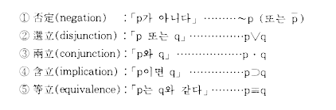
この五つの基本的形式の結合によって、いかなる複雑な演繹的推理も正確に表現される。例えば形式論理学の基本的な原理である、同一律、矛盾律、排中律は次のように記号化される。
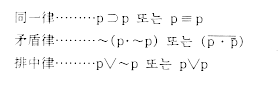
哲学は、それぞれ膨大な体系性をもっているが、その論理構成が正しいかどうかが問題である。その正しさを見分けるのに、数学的記号を用いて計算してみればよいというのである。そのような立場からできたのが記号論理学である。
先験的論理学（超越的論理学）とは、カントの論理学のことをいう。カントは、客観的な真理性はいかにして得られるかという問いに対して、直感形式を通じて得られた感性的内容を思惟形式（悟性形式）と結合すること、すなわち思惟することによって得られると考えた。
すでに述べたように、思考には形式がある。形式論理学の判断形式や推理形式がそれであり、ヘーゲル論理学の弁証法の三段階発展の形式も思考の形式である。同様にカントにおいても、思考するのに一定の形式があるのである。それが彼の直観形式と悟性形式（思惟形式）である。カントの悟性形式には十二の形式があるが、それは十二の判断形式に基づいて分類したものである。カントは判断の種類を量、質、関係、様相の四つに分け、さらにそれぞれを三つに分けて、十二の判断の形式を提示した。そして、この十二の判断形式に対応する十二の思惟形式すなわちカテゴリー（範疇）を立てた。カテゴリーとは、われわれが考える時に必ず従うようになる根本的な思考の枠組みをいうのである。
カントは、直観形式や悟性形式は共に先天的な概念であり、経験によって得られるものではないとした。そのようなカントの論理学は先験的論理学と呼ばれている。ところで認識においては、この先天的な形式だけでは役に立たないのであり、必ず外部からの感性的内容と結合して、認識の対象を構成することによって初めて認識が成立する。つまり悟性形式は、認識のための形式である。カントの悟性形式は概念であり、範疇である。概念とは、内容のない空っぽの器のようなものである。その中に内容が入らないと無意味である。例えて言えば、「動物」というとき、「動物」それ自体は内容のない単純な概念であるだけで、実際に客観世界にあるのは「鶏」、「犬」、「馬」、「さめ」などの具体的な個物なのである。
ところで、カントにおいては、鶏、犬などのそれ自体（物自体）は実際は不可知である。実際は鶏や犬などの物自体が多様な刺激を発し、それでもって人間の感覚器の感性を触発し、物自体の様々な性質に対応する雑多な映像の断片を直観させるのであるが、そのとき、直観された映像の断片を感性的内容または感性的性質という。この感性的性質と心の中の「動物」という概念が合わさって、初めて鶏や犬となって認識の対象となるのである。
それと同様に、悟性形式それ自体は内部が空になっている枠組みにすぎないのであり、外部からの性質によって満たされたとき、初めて認識の対象が構成されるということ、そしてその構成された対象を認識するというのがカントの主張である。
アリストテレス以来の一般論理学（形式論理学）は、認識の対象とは無関係に、思考の一般的形式を扱ってきたが、カントの論理学は認識の対象に関する真理を確認する認識論理学であった。
思考の出発点と方向
従来の論理学は思考の法則や形式を扱っているが、統一論理学は、まず第一に、「思考の出発点」について考えるところから始める。すなわち「なぜ思考が必要なのか」ということから出発して、それから思考の法則や形式について考えるのである。
人間はなぜ考えるのであろうか。それは神が宇宙の創造に先立って、まず考えられたからである。つまり神は宇宙の創造に先立って、心情を動機として愛を実現しようとする目的を立てて、その目的に一致する内容を心の中に構想されたのである。それが思考であり、ロゴス（言）である。
したがって神に似せて造られた人間も、心情を動機として愛を実現するために、目的を立てて、その目的達成のために考えるのが本来の思考のあり方である。ここで目的とは、被造物においては被造目的であるが、そこには全体目的と個体目的がある。全体目的とは、愛でもって家族、隣人、民族、人類などの全体に奉仕して、全体を喜ばせようとすることであり、ひいては神に奉仕して神を喜ばせようとすることである。個体目的とは、自己の個人的な欲望を満足させようとすることである。結局、この二つの目的が人間の生きる目的であり、その目的を達成するために人間は考えるのである。全体目的と個体目的において、全体目的が優先されなくてはならない。したがって人間の思考は、一次的には全体目的を実現するために、二次的には個体目的を実現するためになされなければならない。個体目的も結局は全体目的のためにある。すなわち人間は本来、自己の利益を中心として考えるのではなくて、他人を愛するために考えるのである。これが本来の思考の出発点であり、方向である。
思考の基準
何が思考の基準になるのであろうか。存在論においても認識論においてもそうであるが、統一論理学はどの部門においても、論理展開の根拠を原相においている。だから思考の基準も原相にあるのであり、それは原相の論理的構造である。すなわちロゴス（構想）が新生される時に形成される、内的発展的四位基台である。それは、心情を基盤とした創造目的を中心として、内的性相と内的形状の間に行われる円満で調和のある授受作用のことをいう。
関連分野
統一論理学の本論に入る前に、もう一つ述べておきたいのは論理学の関連分野である。形式論理学は、他の分野との関連を扱っていない。そのため、その代案として弁証法的論理学や認識論理学が出現したのである。統一論理学における思考の出発点は神の愛に基づいた創造目的の実現にあり、その基準は原相の論理構造にあるので、関連分野は大変広いのである。なぜならば、思考の起源は神のみ言（ロゴス）つまり構想であるが、構想なしに営まれる文化分野は何一つないからである。
原相において、ロゴスが形成される内的発展的四位基台は、すべての万物が創造される「創造の二段構造」の一部である。したがってロゴスはみ言であると同時に、宇宙の法則として万物すべてを網羅しているのである。同様にロゴス（思考）の学問としての論理学も、すべての他の領域と密接に関連している。内的発展的四位基台は、外的発展的四位基台とともに創造の二段構造の一部だからである。
創造の二段構造における内的四位基台は論理構造となり、外的四位基台は認識構造や主管構造となる。認識構造とは、万物から認識を得る場合の四位基台として、主として科学（自然科学）研究の場合に造成される四位基台であり、主管構造は生産や実践、つまり産業、政治、経済、教育、芸術などの場合に造成される四位基台である。したがって論理構造を基盤とする論理学は、認識構造や主管構造を基盤とする、すべての文化領域と密接に関連しているのである。
原相の構造
ここで、原相の構造についてさらに説明する。すでに述べたように、原相の構造は内外二段の四位基台から成っている。それを「原相の二段構造」という。それに似た被造物の二段構造を「存在の二段構造」という。ところで原相構造における内外の四位基台は、心情中心の自同性と目的中心の発展性をそれぞれもつようになり、自同的および発展的四位基台となる。その際、内外の四位基台が共に発展的となる場合の原相構造を「創造の二段構造」という。
被造物は例外なく、すべてこの二種の二段構造に似せて造られたので、各個性真理体はみな「存在の二段構造」と「創造の二段構造」をもっている。だから人間において、論理構造、認識構造、存在構造、主管構造などはみな、それぞれ二段構造である。したがって、日常生活において人間が関連しているすべての四位基台は必ず二段の四位基台、つまり二段構造である。
これはまた、内的四位基台の形成に重点を置く領域と、外的四位基台形成に重点を置く領域は互いに補完関係にあることを意味する。例えば内的構造に重点を置く論理学や、外的構造に重点を置きながら主管活動の一分野を扱う教育論などは、相互補完関係にあるのである。要約すれば、人間社会のすべての二段構造は原相の二段構造に由来するのであり、すべて相互関連があるということができる（図10―10）。
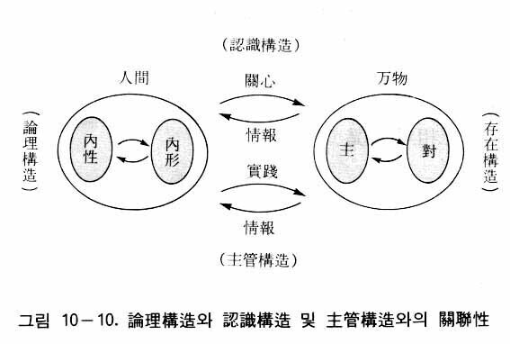
以上で、統一論理学の序論に相当する「基本的立場」の説明を終える。次に統一論理学の本論に入ることにする。
ロゴス形成の構造と内的発展的四位基台
すでに述べたように、論理学は思考の法則と形式に関する学問である。ところで統一論理学の根拠は、原相の本性相内の内的四位基台、特に内的発展的四位基台にある。したがって論理学が思考を取り扱う学問である以上、この内的発展的四位基台において、いかにして思考が発生するかを調べてみなければなければならない。
原相論において述べたように、本性相内の内的発展的四位基台の内的性相は知、情、意であり、内的形状は観念、概念、原則、数理である。内的発展的四位基台において、目的を中心として授受作用が行われるが、目的は心情（愛）を基盤として立てられる。すなわち心情（愛）の目的を実現するために授受作用が行われ、ロゴスつまり構想が形成される。ゆえに構想は、あくまでも愛の目的を実現するための構想である。それが論理構造である。そのように「心情（愛）の目的を実現する内的授受作用によってロゴスを形成する内的四位基台」が、まさに論理構造である（図10―11）。
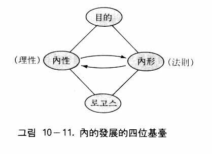
人間も原相のこのような論理構造に倣って、愛の目的を実現するための内的四位基台を造らなければならない。そうすれば、そこから愛を指向する思考が生まれるようになる。
本来の人間の姿
本来、人間の思考においては、動機が心情または愛でなければならない。すなわち、人間の思考は愛の実践のためのものである。人間に自由が与えられているのも愛の実践のためである。自由をもって悪を行ったり、人を憎むのは自由の濫用である。愛の実現とは、要するに愛の世界の実現であり、創造理想世界の実現である。そして多くの人が愛を目指して思考すればするほど、愛の世界はより早く実現するのである。
創造の二段構造
創造の二段構造については、すでに何度も述べているのであるが、ここではそれと論理学の関係について述べる。創造の二段構造とは、内的発展的四位基台と外的発展的四位基台が連続的に形成されることを意味する。そのとき、内的発展的四位基台からロゴスが形成されるが、その内的発展的四位基台がまさに論理構造である。
それでは、外的発展的四位基台は論理学といかなる関係にあるだろうか。論理学にとって外的発展的四位基台は果たして必要なものだろうか。それは必ず必要なものである。なぜならば統一論理学において、思考は創造目的の実現あるいは愛の実現を指向するのであり、したがって愛の実践を前提とするからである。実践するとは、心に思ったことを外部に対して実際に行うことであり、それがまさに外的四位基台の形成を意味するのである。実践の対象は万物であり、人間である。すなわち愛の実践とは、万物を愛し、人間を愛することである。そのように「思考する」ということは、そこには必ず動機と目的と方向があるのであり、必ず実践に移され、行動と結びつかなければならないのである（図10―12）。
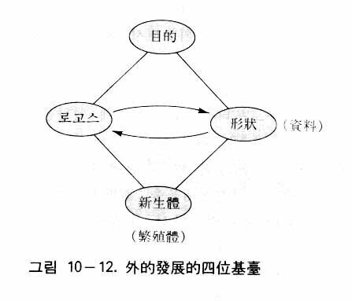
そのように思考が実践と結びつくということは、神がそのようになされたからである。すなわち神は構想され（ロゴスを形成し）、創造を開始されたのである。それで「創造の二段構造」という概念が成立したのである。形式論理学では思考そのものだけの形式や法則を扱っているが、統一論理学の立場から見れば、それは間違いではないが不十分である。よく「知行一致」とか「理論と実践の統一」といわれるが、その根拠が創造の二段階構造にあるのである。
悟性的段階と理性的段階
認識には、感性的段階、悟性的段階、理性的段階の三段階がある。これは、認識が統一原理のいう三段階完成の法則に対応しているからである。感性的段階は、外部から情報が入る窓口であるから認識の蘇生的段階であるが、長成的な悟性的段階と完成的な理性的段階では、思考が営まれるようになる。そのうち悟性的段階の思考は外部からの情報に影響されるが、理性的段階に至れば、思考は外部と関係なしに自由に営まれるようになる。
カントもやはり三段階の認識について論じている。外界から来た感性的内容を、直観形式を通じて受ける段階が感性的段階であり、さらに思考形式（悟性形式）をもって思惟する段階が悟性的段階であり、悟性的認識を統一あるいは統制していくのが理性的段階である(12)。
マルクス主義の場合には、感性的内容が脳に反映するのが感性的段階である。次は論理的段階または理性的段階であって、そこでは判断とか推理が行われる。その次に、実践によって確かめるところの実践の段階がある。マルクス主義の場合、思惟形式は外界の存在形式が意識に反映したものである。
大脳生理学の観点から見れば、「認識論」において説明したように、感性的段階の認識は感覚中枢で、悟性的段階の認識は頭頂連合野で、そして理性的段階の認識は前頭葉の連合野で行われると考えられている。
悟性的段階と理性的段階において、原相の構造と似た論理構造が形成される。悟性的段階において、思考は外界から入ってくる感性的要素（内容）によって規定されている。すなわち、外界の内容と内界の原型が照合されて、認識がひとまず完成する。そのとき認識構造あるいは論理構造として、内的な完結的（自同的）四位基台が形成される。ところが理性的段階では、悟性的段階で得た知識に基づいて、自由に推理を押し進め、新しい構想（新生体）を立てたりする。その時の思考の構造は内的な発展的四位基台である。
認識における大脳の生理過程を来客を迎える過程に比喩することができる。客が入ってくる玄関は、感覚的中枢（感性）に相当し、主人と会う応接室は頭頂連合野（悟性）に相当し、居間や書斎は前頭連合野（理性）に相当する。お手伝いから、玄関に客が来たことを伝えられると、主人は応接間に来て客に会って対話をする。主人は客と相対しながら、彼の言うことを理解しようとする。そのとき主人は自分勝手な考えをすることはできない。客との対話に必要な話をしなくてはならないから、自分の考えは相手の言葉によって左右されるのである。これは悟性的段階において行われる認識のたとえである。対話が終わると主人は客と別れて、自分の居間や書斎で、客の話を参考にしながら、自由に考えることができる。これが理性的段階である。
理性的段階における思考の発展
理性的段階において、思考はいかにして発展していくのであろうか。思考とは、内的性相と内的形状の授受作用である。そこでまず内的性相と内的形状の授受作用によって、第一段階のロゴス、すなわち思考の結論としての構想（新生体）が形成される。それで思考が終わる場合もあるが、たいていの場合、その思考の結論（構想）のいかんによっては、次の段階のロゴス（構想）が必要となる。そのとき第一段階で形成されたロゴスは、思考の素材である一つの概念または観念となって、内的形状の中に蓄えられて、第二段階の思考の時に、他の多くの素材（観念、概念）と共に動員される。このようにして第二段階のロゴスができると、それはまた必要に応じて内的形状に移されて、次の思考の時に、動員される。そうして第三段階のロゴスが形成される。同じ方法で、第四、第五の段階へと思考が続けられるのである。そのように、たとえ一つの事項に関する思考であっても、一回限りで終わらないで、継続される場合が多いのである。これが理性的段階における四位基台形成の過程であり、これを思考の螺旋形の発展という（図10―13）。
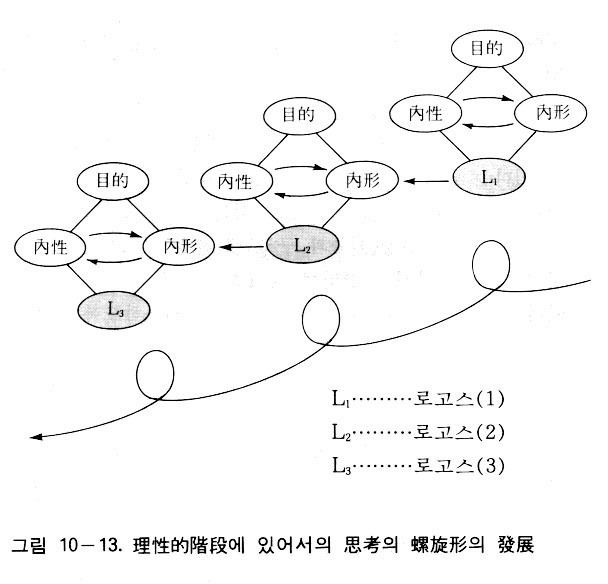
このように理性的段階において思考が無限に発展を続けていくのは、それが発展的四位基台であるからである。しかしいくら発展を続けるとしても、それぞれ段階で思考がいったん終わったのちに新しい思考がなされるので、思考の発展は完結的な四位基台形成の連続なのである。したがって思考は完結的段階を繰り返しながら発展していくのである。
思考の基本形式
悟性的段階における思考（あるいは認識）は、目的を中心として感性的内容と原型が授受作用することによってなされる。そこでまず、目的が正しく立てられなくてはならない。正しい目的とは、すでに述べたように、心情（愛）を基盤とした創造目的のことをいう。
認識論で述べたように、細胞や組織の原意識において形成される原映像と形式像が、末梢神経を通じて下位中枢の潜在意識に至って、統合されて、そこにとどまるようになる。これが人間が先天的に持っている原型（先天的原型）である。その中で形式像が、認識あるいは思考において、一定の規定を与えるところの思惟形式（思考形式）となるのである。
次に、下位中枢の潜在意識が一定の形式（形式像）をもっていることを説明する。例えば盲腸炎が起きた場合を考えてみよう。原意識を統合している下位中枢では、盲腸に固有な性相と形状（機能と構造）に関する情報が絶えず伝えられている。したがって盲腸炎にかかったら、下位中枢はすぐその異常が分かる。そして盲腸が本来の状態に戻るように、適切な指示を送るのである。
胃の運動は、強すぎれば胃けいれんになることがあり、弱すぎれば胃下垂になることがあるが、そのような胃の運動の強弱に関する情報を下位中枢は知っている。そして胃の運動が強すぎたり弱すぎたりすると、適当にこれを調節する。下位中枢の潜在意識がもっているこのような情報は、陽性、陰性に関するものである。
細胞は核と細胞質からなっているが、核が細胞質をコントロールしている。核と細胞質は、主体と対象の関係にある。下位中枢の潜在意識は、そのような細胞における主体と対象の情報をもっている。
潜在意識はまた、時間と空間の感覚をもっている。それで体内のどこかで、またある時に炎症があれば、すぐそこに白血球を送って炎症を直そうとするのである。
有限と無限の関係についても潜在意識は知っている。例えば赤血球はある一定の期間、生命を維持しているが、やがて破壊されて新しい赤血球が生成される。そのように、体内では絶えず新しい細胞が生まれ、古い細胞が滅んでゆくのであるが、潜在意識はそのよう有限性を知っている。また体内では、持続性、永遠性、循環性を保ちながら機能している細胞や器官もある。潜在意識は、そのような細胞や器官の機能の無限性を知っているのである。
このようにして下位中枢の潜在意識は、性相と形状、陽性と陰性、主体と対象、時間と空間、有限と無限などの形式を知っているのである。潜在意識に映っているこれらの相対的関係の像が形式像であるが、その形式像が結局、皮質中枢に送られて思考における思惟形式となるのである。
思惟型式が思考において果たす役割をサッカーの試合に例えて説明することができる。サッカーの試合において、選手たちは、それぞれ思い思いに走ったり蹴ったりするが、一定のルールに従いながらそうしているのである。同様に、理性は自由に思考を進めるのであるが、形式像に影響されて、思考は、一定の形式をとりながら、つまり規則を守りながらなされるのである。
思惟形式は、範疇である。範疇とは、最高の類概念または最も重要な類概念をいうのであり、統一思想においては、四位基台および授受作用の原理を基盤として範疇が立てられる。四位基台と授受作用が統一思想の核心であるからである。そこでまず、十個の基本的な範疇が立てられるが、それぞれの範疇の意味については、「認識論」において説明したとおりである。今日まで、多くの思想家がいろいろな範疇を立てたが、そのうちには、統一思想の範疇に関連するものも少なくない。例えば「本質と現象」という範疇は、統一思想の「性相と形状」に相当するものである。
それで、統一思想の範疇を第一範疇と第二範疇に分けることにする。第一範疇は、統一思想に特有な十個の基本的な形式である。第二範疇は、第一範疇を基礎として展開したものであって、そこには従来の哲学における範疇に相当するものも含まれる。第一範疇と第二範疇を列挙すれば、次のようになる。第二範疇の数には特に制限はなく、ここではその一部だけを挙げるにとどめる。
第一範疇 第二範疇
① 存在と力 ① 質と量
② 性相と形状 ② 内容と形式
③ 陽性と陰性 ③ 本質と現象
④ 主体と対象 ④ 原因と結果
⑤ 位置と定着 ⑤ 全体と個体
⑥ 不変と変化 ⑥ 抽象と具体
⑦ 作用と結果 ⑦ 実体と属性
⑧ 時間と空間 ……
⑨ 数と原則 ……
⑩ 有限と無限
第一範疇の「性相と形状」は、第二範疇の「本質と現象」や「内容と形式」と似ているにもかかわらず、なぜこのような目新しく、一般的でない用語を使うのであろうか。
統一思想の基本になっているのは、四位基台、正分合作用、授受作用などの概念である。これらを取り去れば、統一思想は骨格が抜けてしまったのと同然である。したがって統一思想の範疇としては、これらと関係した概念を用いざるをえないのである。範疇と思想は密接な関係をもっているのである。範疇を見れば思想が分かり、思想を見れば範疇が分かるほどである。範疇は思想の看板である。統一思想は新しい思想であるから、それにふさわしい新しい用語の範疇が当然立てられなければならないのである。
マルクスの思想にはマルクス的な範疇があり、カントの思想にはカント的な範疇があり、ヘーゲルの思想にはヘーゲル的な範疇がある。同様に、統一思想の範疇も統一思想の特徴を示すものでなくてはならないのであり、それが第一範疇としての十個の基本的な形式なのである。
思考の基本法則
形式論理学において、思考の根本原理は同一律、矛盾律、排中律、充足理由律であった。しかし統一思想から見た場合には、それよりもっと基本的な法則がある。それが授受法である。この授受法は論理学の法則であるだけでなく、すべての領域の法則である。政治、経済、社会、科学、歴史、芸術、宗教、教育、倫理、道徳、言論、法律、スポーツ、企業、そしてすべての自然科学（物理学、化学、生理学、天文学等）など、実にあらゆる領域を支配する法則である。
そればかりでなく、全被造世界、すなわち全地上世界（宇宙）と全霊界を支配してきた法則である。そして、論理学と直接関係のある認識論の法則でもあるのはいうまでもない。なぜ授受法がこのように広範囲に作用しているのかといえば、それが神の創造の法則であるからである。そしてその根源は、神の属性（本性相と本形状）の間に作用した授受作用にあるのである。そのような神の属性の間の授受作用に似せて、神は万物を創造されたのであるから、被造物においてはそれが法則となっているのである。
このことは、授受法が他のすべての法則までも支配する最も基本的な法則であることを意味する。物理的法則や化学的法則や天文学的法則も、その基盤となっているのは授受法である。したがって形式論理学をはじめとする諸論理学の法則や形式も、実はその根拠が授受法にあったのである。それゆえ授受法は、思考の基本法則である。ここに、その例として、三段論法と授受法を比較してみる。
三段論法と授受法
三段論法は、形式論理学の中の一つの推理形式である。授受法が形式論理学の形式や法則の根拠となるということを、この次のような三段論法の例から説明する。
人は死ぬ。
ソクラテスは人である。
ゆえにソクラテスは死ぬ。
ここで大前提と小前提から導かれた結論は、目的を中心とした大前提と小前提との授受作用（対比）の結果得られたものである。そこにおいて、「人は死ぬ」と「ソクラテスは人である」という二つの命題が対比されて結論が得られているのである。さらに命題自体も二つの概念（主語と述語）の対比によって成立しているのである（図10―14および図10―15）。
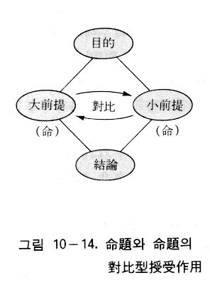
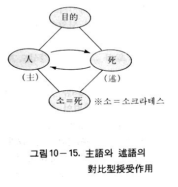
メートルとフィートを比べる次のような例も同様である。
ａ 一メートルは三・二八フィートである。
ｂ この机の横の長さは二メートルである。
ｃ ゆえに、この机の横の長さは六・五六フィートである。
この場合、結論ｃは、ａ命題とｂ命題を対比（授受作用）して得られたものである。
同一律と授受法
同一律の場合も同様である。例えば「この花はバラである」という命題を考えてみよう。これは「この花」と「バラ」を心の中で比較して、それらが一致したので「……である」と判断したのである。比較するということは、対比型の授受作用を意味する。したがって、同一律も授受法に基づいていることが分かる。矛盾律の場合も同様である。そのようにして、形式論理学の法則や形式は、みな授受法の基盤の上に立てられているのである。
思考と自由
論理学は思考の形式や法則を強調しているので、「自分が考えることまで、いちいち法則や形式の干渉を受けなければならないのか」とか、「いかなる干渉も受けずに自由に考えたい」という思いがするかもしれない。ところが思考に規則や形式があるのは、実は思考に自由を与えるためである。
法則や形式のない思考は一歩も進むことができない。それは、あたかも鉄道がなければ汽車は少しも前進できないのと同様である。われわれは、体も心も法則に従って生きるとき、初めて正常に機能することができるのである。
われわれの体を見ると、すべての生理作用は法則の支配を受けている。呼吸も、消化作用も、血液循環も、神経の伝達作用も、みな一定の生理の法則のもとに営まれている。万一、これらの生理作用が法則を離れれば、すぐ病気になるであろう。人間の思考作用においても同様である。したがって「ＡはＡである」という同一律において、「……である」という論理語を使わないで、例えば「この花はバラである」と言わずに「この花、バラの花」と言ったら、それは何の意味か分からないのである。形式の場合も同じである。「全称肯定判断」という判断形式（すべてのＳはＰである）において、「すべての人間は動物である」という判断を例に挙げてみよう。この場合も「すべてのＳはＰである」という形式を取り除けば、ただ「人間、動物」だけが残り、やはり何の意味か全く分からないのである。他人が分からないのはもちろん、時間がたてば自分も分からなくなるであろう。
そのように、思考には必ず一定の法則や形式が必要である。それでは、純粋に自由な思考というものはありうるだろうか。つまり、法則や形式を離れた自由はありえるのだろうか。そうではない。思考に自由はあるが、それは「思考の選択の自由」である。法則や形式に従いながらも、つまり、法則や形式から離れなくても、選択の自由があるのである。
例えば愛の実現に関する思考を例に取れば、愛の実現という共通目的、共通方向を指向しながらも、その具体的な実現においては、個人によってそれぞれの目的や方向は異なるのである。それは選択の自由のためである。つまり選択の自由によって、各自がそれぞれの目的や方向を自由に決定するのである。
それでは、自由な思考がいかにして行われるのであろうか。それは思考（内的授受作用）において、霊的統覚が内的形状内の観念、概念の複合や連合を自由に行うということであり、それはまさに構想の自由である。この構想の自由は、理性の自由性に基因するものである。
形式論理学
形式論理学そのものに対しては、統一論理学は何も反対することはない。すなわち、形式論理学の扱っている思考の法則や形式に関する理論はそのまま認めるのである。しかし、人間の思考には、形式の側面だけでなく内容の側面もある。また思考には、理由や目的や方向性があり、ほかの分野との関連性もある。すなわち思考は、思考のための思考ではなく、認識や実践（主管）のための思考であり、創造目的実現のための思考である。つまり、思考の法則や形式は思考が成立し、維持されるために必要な条件にすぎないのである。
ヘーゲル論理学
ヘーゲルの論理学は、神がいかにして宇宙を創造されたのかを哲学的に説明しようとしたものである。ヘーゲルは、神をロゴスまたは概念として理解し、概念が宇宙創造の出発点であると考えた。
ヘーゲルはまず、概念の世界における「有―無―成」の展開について説明した。有はそのままでは発展がないから、有に対立するものとして無を考えた。そして有と無の対立の統一として成が生じるとした。しかし、そこには問題がある。ヘーゲルにおいて本来、無は有の解釈つまり有の意味にすぎないのであって、有と無が分かれているのではない(13)。ところがヘーゲルは、有と無を分けてしまい、あたかも有と無が対立しているかのように説明したのである。したがってヘーゲル哲学は、出発点からすでに誤謬があったのである。
次に問題になるのは、概念が自己発展するという点である。統一思想から見れば、原相の構造において、概念は内的形状に属するのであり、目的を中心として、内的性相である知情意の機能 ――特に知の機能の中の理性――が内的形状に作用することによって、ロゴス（構想）が形成され、それが新しい概念になるのである。したがってロゴスや概念は、神の心の中に授受作用によって形成されるもの（新生体）であって、それ自体が自己発展するということはありえないのである。テュービンゲン大学総長リューメリンは、ヘーゲルの主張する「概念の自己発展」を批判して、次のように述べている。
ヘーゲルのいわゆる思弁的方法なるものが、その創始者ヘーゲルにとって、一体どんな意味をもっていたかということを理解するために……われわれがどんなに骨を折り頭を悩ましたかは言語に絶する。人々はみな他を顧みて頭をふりながら、こう尋ねたものである。一体君には分かるかね。君が何もしないのに概念は君の頭の中でひとりでに動くかね、と。そうだと答えられるような人は、思弁的な頭脳の持主だと言われた。こういう人とは別なわれわれは、有限な悟性的カテゴリーにおける思考の段階に立っているにすぎなかった。……われわれは、なぜこの方法を十分に理解しなかったかという理由を、われわれ自身の天分の愚かさに求めて、あえてこの方法そのものの不明晰や欠陥にあると考えるだけの勇気がなかったのである(14)。
またヘーゲルの弁証法からは、次のような問題が生じる。ヘーゲルは、自然を理念の自己疎外または他在形式であると見た。これは原相論で指摘したように、汎神論――自然を神そのものの現れと見て、両者に区別をおかない見方――に通じる考え方であった。それは、容易に唯物論に転化する素地となったのである。
ヘーゲルの弁証法において、自然は人間が発生するまでの中間的過程にすぎなかった。建物が出来上がると、途中に組み立てられていた足場は取り去られる。それと同じように、人間が発生してからの自然は、それ自体としては哲学的には無意味なものとなったのである。
彼はまた、歴史の発展において、人間は理性の詭計に操られているとしたが、そのために人間は、あたかも絶対精神によって操られる人形のように存在となってしまった。しかし統一思想から見れば、神が一方的に歴史を動かしているのではない。人間の責任分担と神の責任分担が合わさって歴史はつくられたのである。
さらにヘーゲルの正反合の弁証法は円環性であり、帰還性であるので、最終的には完結点に達するようになる。したがってヘーゲルにおいて、プロシアは歴史の終わりに完結点として現れる理性国家とならなければならなかった。しかし、実際は、プロシアは理性国家になれず歴史の中に消えていった。したがって、プロシアの終わりとともに、ヘーゲル哲学も終わりを告げたということになる。
以上のように、ヘーゲル哲学は多くの問題点を抱えていたが、そのような誤りを生じた原因は、彼の論理学にあったと見ざるをえない。そのことを次に検討してみよう。
ヘーゲルは、概念の発展を正反合の弁証法的発展としてとらえた。概念（理念）は自己を疎外して自然となり、その後、人間を通じて精神となり、本来の自身を回復するという。ハンス・ライゼガングによれば、このようなヘーゲルの思考方式は彼の聖書研究に基づいた特有の方式であるという。すなわち、高い総合のうちに止揚されるヘーゲルの対立の哲学は、「一粒の種が地に落ちて死ななければそれはただ一粒のままである。しかし、もし死んだら豊かに実を結ぶようになる」、「私はよみがえりであり命である。わたしを信じる者は、たとえ死んでも生きる」というヨハネ福音書をテーマにしたものだという(15)。
そのような立場からヘーゲルは、神をロゴスまたは概念としてとらえ、そしてそのような神が、あたかも地に蒔かれた種の生命が外部に自己を現すように、自己を外部の世界に疎外したと見たのである。そこにヘーゲルの犯した誤りの根本原因があった。
統一思想から見れば、神は心情（愛）の神であり、愛を通じて喜ぼうとする情的な衝動によって、創造目的を立て、ロゴスでもって宇宙を創造されたのである。その時のロゴスは神の心の中に形成された創造の構想であるだけで、神そのものではない。しかし、ヘーゲルの概念弁証法において、神には心情（愛）や創造目的は見あたらないだけでなく、神は創造の神ではなくて、発芽して成長する一種の生命体であったのである。
ここで、ヘーゲル論理学と統一論理学の重要な概念を比較してみれば、その意味するところは異なっているが、互いに相応する関係にあることが分かる。ヘーゲルにおけるロゴスは、統一思想では神の構想に相当する。ヘーゲルのロゴスの弁証法は、統一思想では原相の授受作用に対応する。そしてヘーゲルの正反合の形式は、統一思想の正分合の形式に対応する。ヘーゲルの帰還的、完結的な弁証法は、統一思想では、自然界においては創造目的を中心とした授受作用による螺旋形の発展運動に相当し、歴史においては再創造と復帰の法則に相当する。ヘーゲルは自然を通じて理念を見いだそうとしたが、統一思想は万物を通じて象徴的に、原相（神相と神性）を発見するのである。したがってヘーゲルの汎神論的性格は、統一思想においては汎神相論――すべての被造物において神相が現れているという見方――をもって克服することができる。
マルクス主義論理学
先に述べたように、旧ソ連の思想界において引き起こされた言語学論争を収拾するために、スターリンは「マルクス主義と言語学の諸問題」という論文を発表し、そこで彼は、言語は上部構造に属するものではなく、階級的なものでもないと結論を下したのであった。その結果、形式論理学の矛盾律・同一律は認められるようになったのである。
しかし、形式論理学の同一律・矛盾律は思考の法則であるだけで、客観世界の発展法則ではなかった。したがって思考が同一律・矛盾律に従うことは認めるとしても、客観世界に関する限り、発展は矛盾の法則（対立物の統一と闘争の法則）に従うというのである。形式論理学は自然界を扱うのではなく、思考を扱うからだというのである。しかしそうすると、「思考は客観世界の反映である」という唯物弁証法の本来の主張が崩れるというアポリア（aporia）が生じてしまったのである(16)。
そのようにスターリンの論文が発表されたあとは、唯物弁証法において、客観世界の法則（矛盾の法則）と思考の法則（同一律）が相反するようになってしまった。それに対して、客観世界においても、思考においても、発展性（変化性）と不変性が統一されていると見るのが、統一思想の主張である。
悟性的段階の思考（あるいは認識）は、主として自己同一的である。なぜならば、外界から来た感性的内容と内部の原型が照合することによって、認識がいったん完了するからである。ところが理性的段階における思考は、発展的になる。しかしそうであっても思考は、段階的に発展するから、それぞれの段階において完結的な（すなわち自己同一的な）側面もあるのである。したがって統一思想は同一律・矛盾律も当然認める立場である。
ともかく唯物弁証法において、形式論理学すなわち同一律・矛盾律を認めるようになったということは、何を意味するのであろうか。本来、唯物弁証法の基本的な主張は、事物を不断に変化し、発展するものとしてとらえるということであった。ところが同一律・矛盾律を認めたということは、たとえ思考に関することであるにせよ、不変性を肯定するようになって、唯物弁証法の変質をもたらしたことを意味するのである。これは、弁証法の修正ないしは崩壊を意味するものである。同時に、事物を自己同一性と発展性の統一として把握する統一思想の主張が正しいことを証明するものである。
記号論理学
思考の正確さや厳密さを期するということは意義あることであって、記号論理学に反対する理由はなにもない。しかし、数学的厳密さだけでは、人間の思考を十分にとらえることはできない。
原相において、内的性相と内的形状が授受作用してロゴスが形成されたが、そのとき内的形状は原則と数理を含んでいるので、授受作用を通じて形成されたロゴスも数理性を帯びている。したがって、ロゴスによって創造された万物には数理性が現れる。だから科学者たちは、自然を数学的に研究しているのである。
人間の思考は、ロゴスを基準にしたものである。したがって人間の思考にも当然、数理性があるのである。言い換えれば、思考は数理的正確さに従ってなされるのが望ましい。ここに、記号論理学が思考を数理的に研究する意義が認められるのである。
しかし、そこには留意しなければならない点がある。それは内的性相と内的形状の授受作用において、心情が中心になっているということである。これはロゴス（言）の形成において、心情が理性や数理より上位にあることを意味している。したがって、人間は本来、ロゴス的存在（理性的、法則的存在）であるのみならず、より本質的にはパトス的存在（心情的、感情的存在）である。すなわち、思考にたとえ数学的厳密さがなくても、そこに愛あるいは感情がこもっていれば、発言者の意向が十分に相手に伝えられるのである。
例えば、誰かが火事に出会って「火だ！」と叫ぶとき、これは文法的に見れば、「これが火だ」という意味か、「今、火事が起きた」という意味か、分からない。しかし、差し迫った場合には、助けを求める訴えの感情がそこにこもっていれば、その言葉に文法的な正確さがなくても、その意味はすぐ分かるのである。
人間は本来、ロゴスとパトスの合性体である。ロゴスだけに従うのでは、人間としては半面の価値しかない。理性的だけでは人間性が不足しており、情的な側面を共に備えて初めて完全な人間らしさが出るのである。したがって、あまり正確でない言葉の方が、かえって人間らしいという場合もある。つまり人間の思考には、厳密を要する面もあるが、必ずしも常に正確に、論理的に表現しなくてはならないと主張することはできないのである。
イエスの言葉を見ても、非論理的な面がたくさん見られる。しかし、その言葉はなぜ偉大なのであろうか。それはその言葉のうちに、神の愛が含まれているからである。したがって、人間の言葉が正確に論理に従っていなくても、その中にパトス的な要素が適切に含まれているとすれば、その意味するところを十分に相手に伝えることができるのである。
先験的論理学
カントは、対象からの感性的内容と人間悟性の先天的な思惟形式が結合して、認識の対象が構成されることによって、初めて認識と思考がなされると主張した。しかし統一思想から見れば、認識の対象には内容（感性的内容）だけでなく形式（存在形式）もあり、認識主体にも形式（思惟形式）だけでなく内容（内容像）もあるのである。カントのいう先天的な形式と感性的な内容だけでは、対象に対する思考の真理性は保証されない。それに対して統一思想では、人間と万物の必然的関係から思考の法則・形式と、客観世界の法則・形式の対応性が導かれ、対象に対する思考の真理性が保証されているのである。
統一論理学と従来の論理学の比較
最後に、統一論理学、形式論理学、弁証法的論理学、先験的論理学を比較して、その特徴を表にまとめれば次のようになる（表10―１）。
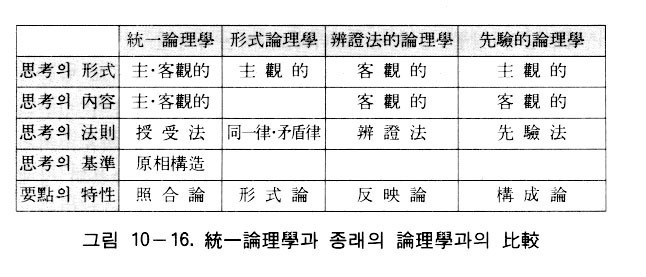
底本『統一思想要綱（頭翼思想）』統一思想研究院。本文は Daum カフェ「천일국 경전방」 の連載から、目次は 統一思想研究院 の公開目次に合わせました。
コメント感覚で送れます（匿名OK）。ページURLは自動で添付されます。